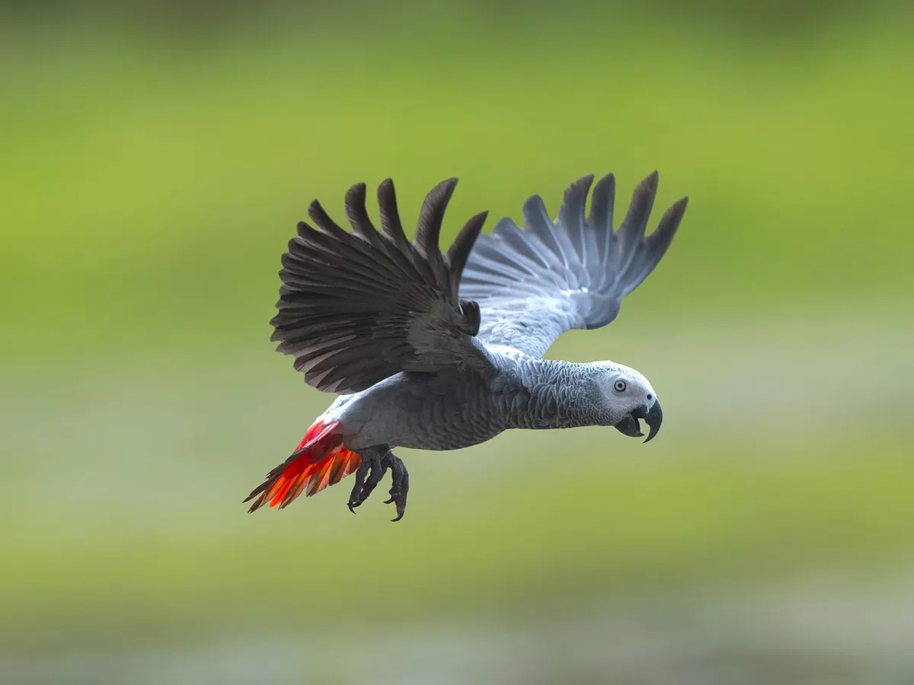
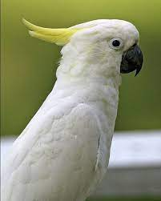

African Grey Parrot
The African grey parrot is a highly intelligent bird native to the rainforests of West and Central Africa. They are known for their ability to mimic human speech and for their excellent problem-solving skills. African grey parrots can live up to 50-60 years in captivity with proper care.

Some interesting facts about African grey parrots:
- They have been observed to use tools in the wild, such as using a stick to scratch their backs.
- They have a large vocabulary and can learn hundreds of words and phrases.
- They are highly social birds and require a lot of attention and interaction with their owners.
Sulphur Crested Cockatoo
The sulphur crested cockatoo is a large white parrot native to Australia and surrounding islands. They are known for their distinctive yellow crest and loud, raucous calls. Sulphur crested cockatoos can live up to 70 years in captivity with proper care.

Some interesting facts about sulphur crested cockatoos:
- They are highly social birds and require a lot of interaction with their owners.
- They are skilled at problem-solving and have been observed using tools in the wild.
- They can be very loud and require a lot of training to prevent excessive noise.
Macaw Parrot
The macaw parrot is a large, colorful bird native to Central and South America. They are known for their vibrant plumage and powerful beaks. Macaw parrots can live up to 50 years in captivity with proper care.

Some interesting facts about macaw parrots:
- They are highly intelligent birds and can be trained to do a variety of tasks, such as speaking or performing tricks.
- They have very strong beaks, which they use to crack open nuts and seeds in the wild.
- They are very social birds and requirse a lot of interaction and attention from their owners.